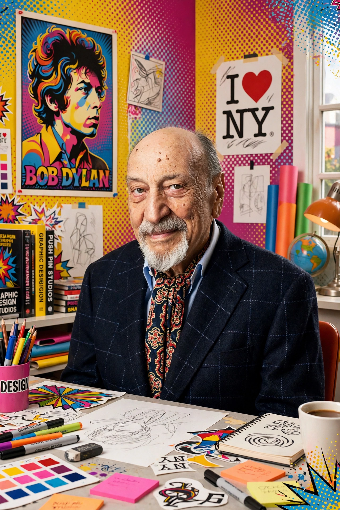

Milton Glaser (June 26, 1929 – June 26, 2020) was an American graphic designer whose work reshaped postwar visual culture. He co-founded Push Pin Studios and New York magazine, designed the iconic I ♥ NY logo (1977), the psychedelic Bob Dylan poster (1966) and the DC Comics bullet logo.

| Born | 26 June 1929, New York City, US |
|---|---|
| Died | 26 June 2020 (aged 91), New York City |
| Known for | I ♥ NY logo, Push Pin Studios, New York magazine |
| Awards | National Medal of Arts (2009) |
Born in the Bronx to Hungarian Jewish immigrants, Glaser studied at Cooper Union and in Bologna under Giorgio Morandi. In 1954 he co-founded Push Pin Studios with Seymour Chwast and Edward Sorel, whose eclectic, historically referential illustration challenged Swiss modernist orthodoxy. He co-founded New York magazine with Clay Felker in 1968 and founded Milton Glaser, Inc. in 1974.
His 1966 Dylan poster, inserted into a greatest-hits album, became one of the best-known American posters. The I ♥ NY logo, sketched in a taxi for a state tourism campaign, was given free and became a global template; after 9/11 he adapted it as "I ♥ NY More Than Ever." Other work includes the Brooklyn Brewery identity, posters for the School of Visual Arts (where he taught for decades), and the Mad Men-era graphics late in life.
Glaser received the National Medal of Arts in 2009, the first graphic designer so honoured. He died on his 91st birthday. His archive is held by the School of Visual Arts and the Cooper Hewitt.